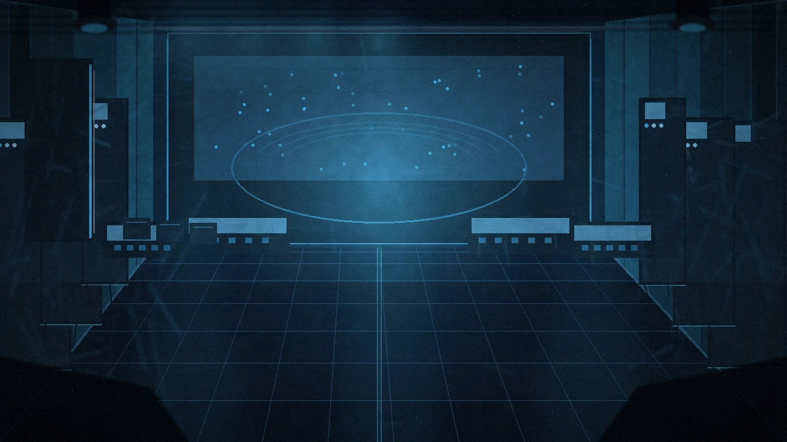

Play first
Responsive movement, readable hazards and fair boss telegraphs come before the lesson. When a platforming beat and a quiz compete for a room's time, the platforming wins.

Cyber Access Protocol is a 2D cyber-security action platformer about a junior operator trapped in a locked-down technology tower. Fight through fifty nodes of hostile automation, restore the systems and uncover the adversary attacking the record itself.
Asterion Tower detects unusual authentication activity. Within minutes, doors lock into fail-safe mode, workstations display ransom notes, and the building's automation platform begins issuing conflicting commands.
You are Alex Vale, a junior incident-response trainee on the late shift. You are not a super-hacker. You have a Pulse Tool, a scanner, limited authority, and a radio channel to a security lead who is somewhere else in the building.
To get out — and to get everyone else out — you will have to move through the tower physically, reach its systems, investigate what is actually happening, and make defensive decisions whose consequences change the rooms around you.
Behind the incident is an adversary known only as the Null Architect: patient, deliberate, and attacking the record itself — logs, ownership and trust.
Every concept is taught through a physical consequence: a firewall that blocks projectiles, segmentation that stops a worm, monitoring that reveals an invisible path, a backup that makes recovery possible.
Responsive movement, readable hazards and fair boss telegraphs come before the lesson. When a platforming beat and a quiz compete for a room's time, the platforming wins.
Configure a rule, correlate a log, preserve an artifact, choose a containment action. Interactive decisions replace lectures, and every answer comes with a clear explanation.
Restoring a control changes enemy pressure, routes, hazards or objectives. If a precaution has no visible effect on the level, it is not finished.
Lobbies, offices, NOCs, server halls, vaults and rooftops are stages in a single incident — not unrelated quiz screens. Corridors, lifts and service shafts connect them.
Keyboard and controller, full remapping, high contrast, three colorblind modes, 115% text scaling, reduced motion, touch controls and an RTL Urdu localization.
No account, no live service, no leaderboards, no telemetry dependency. The campaign, saves, settings and archive live on your machine.
The campaign begins with a breach on the lower floors and climbs toward the city core. Each chapter introduces a new security discipline, a new palette and a new family of bosses.

Passwords, malware, networks and identity. The night the tower locked itself down.
Enter chapter →
Routing, DNS, trust zones and resilience. The signal leaves the building.
Enter chapter →
Roles, sessions, privilege and zero trust. The fight moves to who is allowed in.
Enter chapter →
Cloud, keys, pipelines and recovery. The tower's data estate leaves the building.
Enter chapter →
Intelligence, forensics, AI and command. One adversary, three endings.
Enter chapter →
Three endings, nine disciplines and one adversary. The complete final chapter.
Open the field manual →A room is a complete beat: enter, read the problem, reach the console, make a defensive decision, watch the building change, then face what is guarding it.
Levels 41–50 push beyond individual systems. You build an intelligence assessment, run a threat hunt, preserve forensic evidence, validate defenses in a purple-team exercise, contain a zero-day, prove recovery — and then govern the model that was never supposed to hold that much power.
The final campaign converges on BLACKSTAR and the Null Architect. Level 50 ends in a command lock with three distinct epilogues: coordinated defense, controlled automation, or full shutdown.
The campaign is playable from the first lobby to the final command lock: five chapters, forty missions, ten security disciplines and three endings.
Asterion cyan and amber. Network blue and teal. Identity violet and magenta. Cloud ice and electric blue. The Last Signal white and warning red. The palette is part of the navigation.
A 2D cyber-security action platformer about a junior operator restoring a locked-down technology tower and uncovering the adversary attacking its records.
Fifty levels and forty missions across five chapters, from the tower lobby to the city core.
No. It is a single-player, offline game with no account, leaderboard or online requirement.
No. Each room teaches one idea before it tests it, and every answer comes with an explanation.
Windows PC today. More platforms and a store release will be announced when they are ready.
Levels take 8–15 minutes; a typical session runs 30–120 minutes across one to three levels.
Read the campaign map, study the controls, or go straight to the evidence archive. The whole record is here.